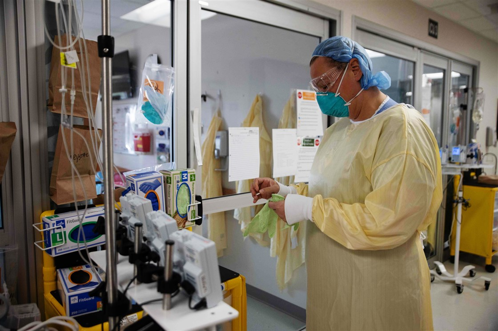

CENTERVILLE, Ohio – Like many public school districts around the country, Centerville City Schools near Dayton started the year off remotely for the 8,000 kids it serves. Based on recommendations from local public health officials, the district didn't resume in-person classes until mid-October.
It didn't last. By late October, Superintendent Tom Henderson said the district was scrambling every day to find teachers for 90 to 115 classrooms, competing with other districts for substitutes. At one point, Henderson and his team were filling in teacher gaps hour by hour when substitutes and full-time teachers had planning periods. Crucial support staff members were also tough to find. Some days, they didn't have enough school bus drivers.
Too many people had either caught Covid-19 or had recently come into contact with someone who had it. "Most of the exposure has come from outside of school," Henderson said. "The quarantines are just really hard to deal with."
The week before Thanksgiving, Henderson pulled the plug. Faced with rising case counts in the community and expecting positive case counts and associated quarantines to spike after the holiday, he shifted the district to remote learning until Jan. 19 — more than two weeks after New Year's Day.
"Henderson said the local public health commissioner has acknowledged that schools are doing a good job preventing the spread of Covid-19 inside their buildings. But there's nothing they can do about the broader outbreak.
As the pandemic raged across the United States, experts warned that keeping schools open for in-person learning would become increasingly difficult if community spread went unchecked. Centerville's experience is an object lesson in that dynamic. Several other school districts announced similar shifts to remote learning over the holiday period.
Keeping schools open has emerged as a flashpoint over how states and municipalities are handling the pandemic. As in many other places in the U.S., restaurants in Ohio remain open with indoor dining, which epidemiologists have pointed to as a major source of community spread.
Centerville's schools also illustrate a broader challenge for communities with rising case rates — quarantines that end up sidelining people for multiple cycles. The Centers for Disease Control and Prevention now recommends that people who are exposed to Covid-19 quarantine for 10 days if no symptoms are reported and for seven days if they have negative test results and no symptoms. That is down from previous guidance, which recommended 14 days of quarantine regardless of symptoms or test results.
New quarantines are required for every positive exposure. Within a family, exposures can stack, with the quarantine clock resetting upon each new contact with an infected person. Under the original guidance, a person who tested positive needed to isolate for 10 days, but a caregiver or a sibling had to quarantine for 14 days, starting at the end of the infected person's contagious period. Although the CDC has revised its quarantine guidance, the same dynamic still occurs, albeit for a shorter time.
"Twenty-four days is a long time for a staff or a student," Henderson said. In-person school is vital on a number of levels. At a minimum, it functions as child care for working parents and provides food and a safe place to go for children who are food insecure or homeless. Remote school is less effective for younger children, which is why some states have prioritized reopening elementary schools and kept high schools online. But keeping schools open has proven difficult in areas where community spread of Covid-19 has surged.
Montgomery County, where Centerville is located, was recently updated to a Level 4 Public Emergency by the state's Public Health Advisory System, a designation that indicates "severe exposure and spread." Health officials recommend that residents leave home only for essential supplies and services. There have been 4,285 cases in the county in the past two weeks, a number that is almost certainly an undercount because of delays in test processing created by the Thanksgiving holiday. The county's intensive care units are nearly 86 percent full as of Dec. 3. Overall, nearly a third of ICU patients across the state have Covid-19, according to the most recent release from the state Health Department.
Dr. Nora Colburn, associate medical director for clinical epidemiology at The Ohio State University Wexner Medical Center, said in a press release that non-Covid patients are increasingly being crowded out of the healthcare system.

"We are in crisis," Colburn said. "Hospitals across Ohio are running out of beds, healthcare workers are burned out and stretched thin, and our hospitals are stressed to the extreme."
Gov. Mike DeWine instituted a curfew from 10 p.m. to 5 a.m. for three weeks beginning Nov. 17, which experts say is likely to have little effect on the spread of the coronavirus. Other states have also instituted coronavirus mitigation measures, which schools have tried to adapt to as they push to return to classrooms.
Private and parochial schools, which have been operating in person since late August, are starting to feel the crunch, as well. Archbishop Alter High School, a Catholic high school in Kettering, shifted the entire school to remote learning the Thursday before Thanksgiving after dozens of students were out because of quarantines and positive cases. Principal Lourdes Lambert said the goal was to keep all students on the same footing and resume in-person classes after the holiday.
The decisions made outside school walls will continue to affect the sustainability of in-person learning, even more so as cold weather forces people indoors, which Lambert said she believes was behind her school's increase in cases. "More people are inside," Lambert said. "I think that's why we're seeing an uptick in cases." Henderson, Centerville's superintendent, said he hopes to resume in-person learning next month but acknowledges that he worries about what conditions will be like then.
"Will things be much different in January? Our goal is to come back" he said, but that's not entirely up to him or his staff, who have been following every safety protocol that's been recommended. "This is hard," Henderson said. "It's just this invisible thing that's out there."